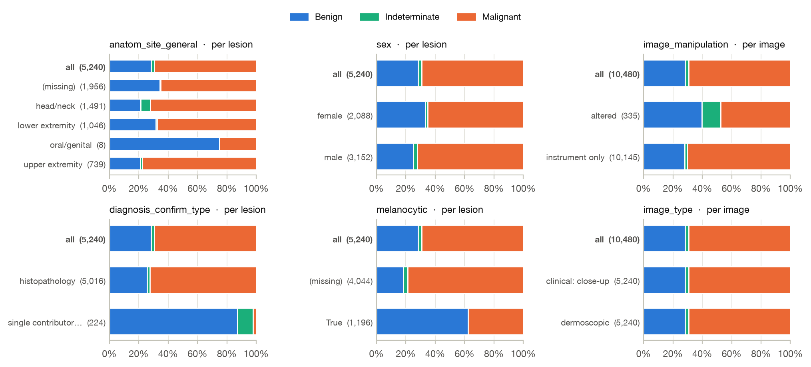
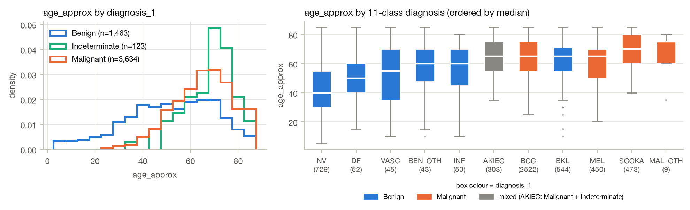
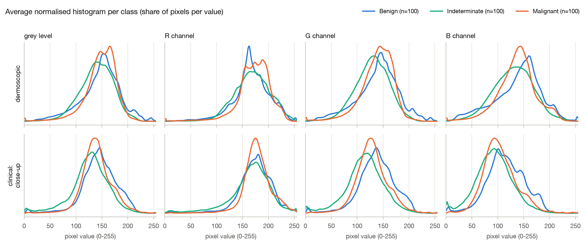
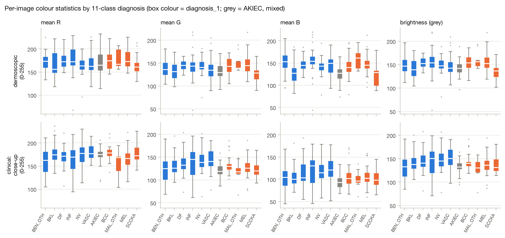
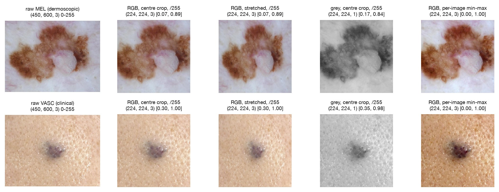
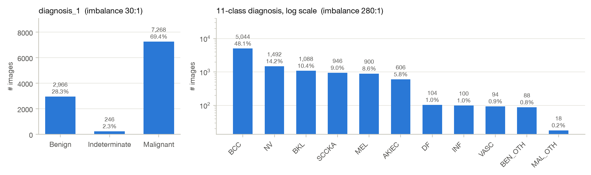
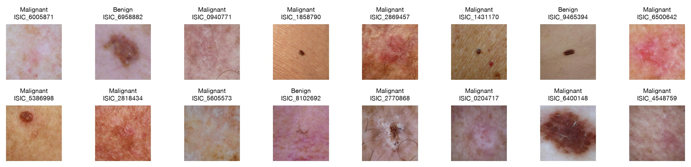

MILK10k has 10,480 images (all 600×450 px) of 5,240 skin lesions, one dermoscopic and one clinical close-up per
lesion. The target is diagnosis_1: 3,634 Malignant (69.4%), 1,483 Benign (28.3%) and 123 Indeterminate (2.3%)
lesions; the 11-class diagnosis from training_gt.csv gives a finer view. Main findings: age and body
site carry real but modest signal; six columns leak the label and must never be model inputs; simple colour statistics
overlap heavily between classes (best single feature: ROC-AUC 0.66), so a model needs spatial patterns, not global
colour.
Method. Fields that are identical for both images of a lesion (all but image_type and
image_manipulation) are analysed with one row per lesion (n = 5,240); using both images would count
each lesion twice and overstate significance. Categorical fields: chi-square test of independence, with Cramér's V
as effect size (0 = none, 1 = perfect). Age: Kruskal–Wallis test, a rank-based one-way ANOVA,
because age comes in coarse 5-year bins, is skewed and spreads differently per class, which breaks ANOVA's normality and
equal-variance assumptions (classic ANOVA agrees: η² = 0.15). With 5,240 lesions every p-value is
below 0.001, so fields are ranked by effect size. Missing values form their own category, so informative missingness
is measured too.
| Column | Type | Missing | Unit | Test (3 classes) | V, 3 cl. | V, 11 cl. | Verdict |
|---|---|---|---|---|---|---|---|
| Candidate model inputs | |||||||
| age_approx | numeric | 0.4% | lesion | Kruskal–Wallis H = 586, p < 10−127 | 0.31* | 0.20* | moderate: strongest usable field |
| anatom_site_general | categorical (4) | 37.3% | lesion | χ² = 260, df 8 | 0.16 | 0.17 | weak; missingness informative |
| image_manipulation | categorical (2) | 0% | image | χ² = 202, df 2 | 0.14 | 0.13 | weak; acquisition proxy, bias risk |
| sex | categorical (2) | 0% | lesion | χ² = 46, df 2 | 0.09 | 0.12 | negligible |
| anatom_site_special | categorical (2) | 98.0% | lesion | χ² = 44, df 4 | 0.06 | 0.14 | negligible; nearly always missing |
| image_type | categorical (2) | 0% | image | χ² = 0, p = 1 | 0.00 | 0.00 | none: one image of each per lesion |
| attribution, copyright_license | constant | 0% | lesion | — | 0 | 0 | useless: a single value |
| Leak the label: never model inputs | |||||||
| diagnosis_2 / _3 / _4 | categorical | 0 / 1.5 / 85.5% | lesion | χ² = 10,480 / 10,440 / 1,699 | 1.00 / 1.00 / 0.40 | 0.95 / 0.91 / 0.37 | finer levels of the label itself |
| melanocytic | boolean | 77.2% | lesion | χ² = 897, df 2 | 0.41 | 1.00 | True exactly for NV and MEL |
| diagnosis_confirm_type, concomitant_biopsy | categorical / boolean | 0% | lesion | χ² = 507, df 2 | 0.31 | 0.31 | identical fields: was it biopsied? |
Table 1. Column audit and association with the label (identifiers isic_id, lesion_id
and the target are excluded). V = Cramér's V. *For age the 17 age bins are treated as categories, to compare it on
the same scale; Kruskal–Wallis effect size η²H = 0.11 (3 classes), 0.20 (11 classes).

diagnosis_confirm_type,
melanocytic) and image_manipulation, slightly for site and sex, not at all for
image_type.
attribution, copyright_license (constant), image_type
(uninformative by construction), sex (72% vs. 65% Malignant in men vs. women),
anatom_site_special (98% missing).diagnosis_2/3/4 are the label at a finer level; melanocytic is True exactly
for nevi and melanomas; diagnosis_confirm_type and concomitant_biopsy record whether the lesion
was biopsied, a decision taken because of the suspected diagnosis (87% of lesions confirmed by clinical assessment
alone are Benign) and unknown when the model is used.Method. 100 lesions per diagnosis_1 class (seed 42, both images: 100 dermoscopic and 100 clinical
images per class) and, for the finer view, 30 lesions per 11-class diagnosis (MAL_OTH: all 9). Per image: grey-level
(0.299R + 0.587G + 0.114B) and R/G/B histograms normalised to sum to 1, so each image counts
equally, plus the mean and standard deviation of each channel. Images are decoded at ≤ 256 px; normalised
histograms barely change with resolution. Dermoscopic and clinical images are always analysed separately.

| Image type | Class | n | Brightness | Mean R | Mean G | Mean B | Std R | Std G | Std B |
|---|---|---|---|---|---|---|---|---|---|
| dermoscopic | Benign | 100 | 147.6 ± 20.2 | 167.0 ± 22.4 | 139.5 ± 21.2 | 138.9 ± 22.5 | 24.1 | 31.2 | 35.1 |
| Indeterminate | 100 | 140.6 ± 21.8 | 167.8 ± 27.4 | 128.9 ± 20.5 | 129.8 ± 25.8 | 19.5 | 24.2 | 27.3 | |
| Malignant | 100 | 148.5 ± 16.3 | 172.2 ± 20.7 | 138.6 ± 16.7 | 137.1 ± 23.0 | 19.9 | 23.7 | 25.5 | |
| clinical close-up | Benign | 100 | 145.7 ± 23.2 | 174.1 ± 22.8 | 137.1 ± 25.0 | 115.3 ± 26.7 | 20.1 | 22.2 | 22.3 |
| Indeterminate | 100 | 127.0 ± 22.5 | 164.6 ± 26.2 | 114.4 ± 23.0 | 93.0 ± 22.7 | 26.6 | 25.9 | 25.5 | |
| Malignant | 100 | 140.7 ± 17.6 | 178.1 ± 18.5 | 128.6 ± 18.7 | 104.4 ± 21.9 | 18.1 | 22.2 | 22.4 | |
| ROC-AUC of each single feature, Malignant vs. Benign | |||||||||
| dermoscopic | 0.52 | 0.58 | 0.50 | 0.46 | 0.37 | 0.35 | 0.34 | ||
| clinical close-up | 0.42 | 0.56 | 0.38 | 0.37 | 0.49 | 0.53 | 0.54 | ||
Table 2. Per-image colour statistics, 0–255 scale (mean ± standard deviation across images; the “Std” columns are means of the per-image standard deviations). ROC-AUC: 0.5 = complete overlap; below 0.5 = lower values in Malignant images.

Other explanations than “the diagnosis causes the colour”. (1) The lesion often fills a small part
of the frame, so whole-image statistics mostly measure the surrounding skin: skin tone, sun damage and the redness of
the body site, while site and age differ by class (actinic keratoses and SCC on sun-damaged heads of older patients).
(2) Acquisition: dermoscope (contact plate, polarised light, dark corners, rulers, ink) vs. camera, plus lighting,
white balance and devices that differ by clinic while the class mix also differs by clinic (see the
image_manipulation and missing-site patterns). (3) Sampling: the sample is balanced per class, but the
boxes of DF, INF, VASC, BEN_OTH (30 lesions) and MAL_OTH (9) are noisy.
Conclusion. Colour and brightness alone are a weak signal: the distributions overlap heavily, the best single feature reaches AUC 0.66, and part of that comes from class composition and acquisition rather than pathology. The project needs features that capture spatial structure (borders, pigment network, vessels, texture), i.e. a CNN, with only mild colour augmentation so the little colour signal is not erased. Because the image-type gap is larger than any class gap, both image types must be represented in every class and split, or handled explicitly.
Design. All code is one importable package, milk10k/, with a module per part:
preprocessing, loader, visualize (and metadata_analysis,
color_analysis for Parts 1–2). config.py is the only place with paths (environment variable
MILK10K_DIR, default data/ in the repository, so no absolute paths), the seed (42) and the image
size (224). Scripts and notebooks only call these functions, so later milestones extend them (splits, torchvision
transforms) instead of copying code. Eleven pytest tests check shapes, value ranges, skipping of bad files,
the available-only filter and reproducible shuffling.
Preprocessing. preprocess_image(source, size=224, color_mode="rgb"|"gray"|"hsv",
normalize="scale"|"minmax"|"zscore"|"none", keep_aspect=True) takes a file path, uint8 array or PIL image and returns
(array, info): a float32 (H, W, C) array plus a dict with the original size, final shape, options and value
range. Resizing scales the shorter side to 224 and cuts the centre square, so lesion shape (asymmetry, border) is not
distorted; the trimmed edges are mostly skin and dark dermoscope corners. Default normalisation divides by 255, i.e.
min-max scaling with the fixed 0–255 range: it fits no statistics (no test information can leak), keeps real
brightness differences between images, and matches torchvision's ToTensor. Per-image min-max would stretch
every image's contrast and erase those differences (Figure 5, last column); z-score is available with a mean/std that
must come from the training split. preprocess_batch(items) takes metadata rows (DataFrame) or a list of paths
and returns BatchResult(images (N, H, W, C), ids, infos, skipped). A missing or corrupt file is skipped with
its reason (demo: 3 processed; 2 skipped with FileNotFoundError and UnidentifiedImageError); a
wrong option raises at once instead of silently skipping every image.

| MilkLoader | Interface (Part 4) |
|---|---|
| Construct | MilkLoader(metadata, img_dir=None, label_col="diagnosis_1", batch_size=32, shuffle=True, seed=42,
classes=None, drop_last=False, **preprocess_options) |
| Available only | keeps the rows whose .jpg exists on disk (10,480 of 10,480 here); n_unavailable counts the rest |
| Iterate | for images, labels, ids in loader: → images (B, 224, 224, 3) float32 · labels (B,) int64 ·
ids = list of isic_id; one pass = one epoch |
| Labels | loader.classes = ["Benign", "Indeterminate", "Malignant"] → 0, 1, 2 |
| Memory, speed | images are read and processed batch by batch, never all at once; 1.9 ms per image, about 20 s per epoch |
| Order | new shuffle every epoch from seed + epoch: different each epoch, identical across runs |
| Helpers | len(loader) = batches per epoch (328 at batch size 32); class_counts(); skipped = (id, reason) pairs |
Visualizer. show_grid plots images with their labels as titles from a list of arrays or straight
from a loader batch (Figure 7); plot_class_balance draws counts and percentages per class (Figure 6);
plot_batch_summary plots the per-channel value distribution of a processed batch next to raw/processed pairs,
to confirm the normalisation (values stay within [0, 1]; saved as figures/session2/fig8_batch_summary.jpg).

Class balance. The data are strongly imbalanced: 69.4% of images are Malignant and 2.3% Indeterminate (30 : 1); among the 11 classes BCC alone is 48.1% and MAL_OTH 0.2% (18 images, 280 : 1). All 123 Indeterminate lesions are actinic keratoses (AKIEC), a class that also holds 180 Malignant lesions. Consequences: accuracy misleads (always answering “Malignant” scores 69%), so I will report balanced accuracy, macro-F1 and per-class recall; splits must be stratified and grouped by lesion; training needs class weights or oversampling; the rarest classes may need merging. The imbalance reflects biopsy-based collection, not real-world prevalence.

MilkLoader (batch size 16), drawn with show_grid.